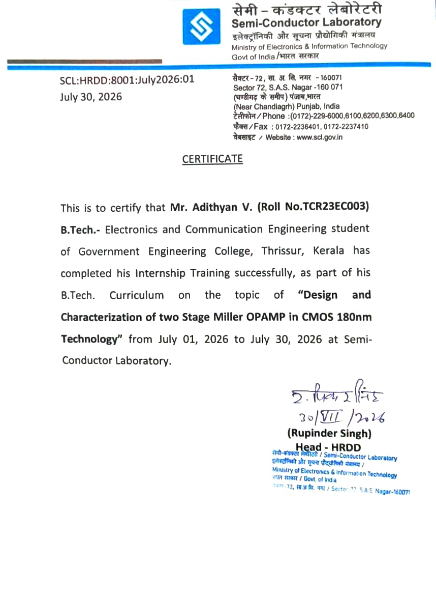
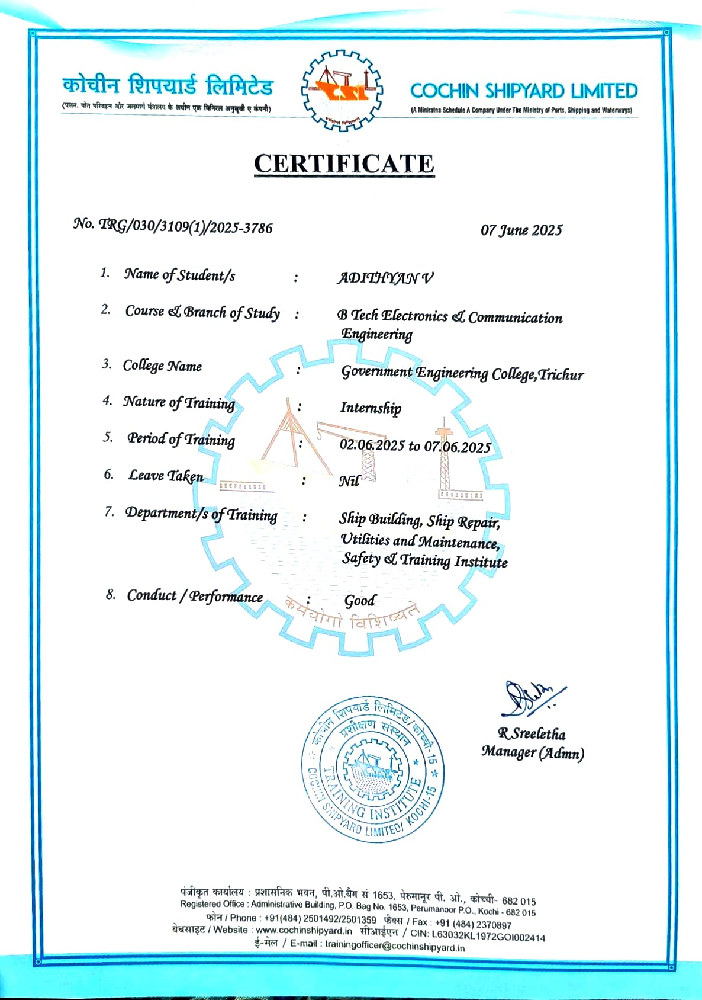
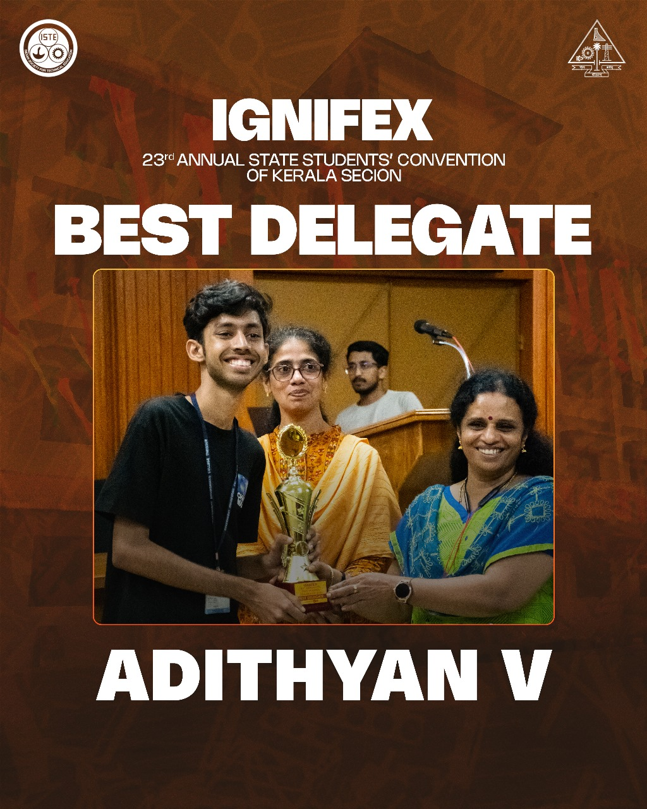
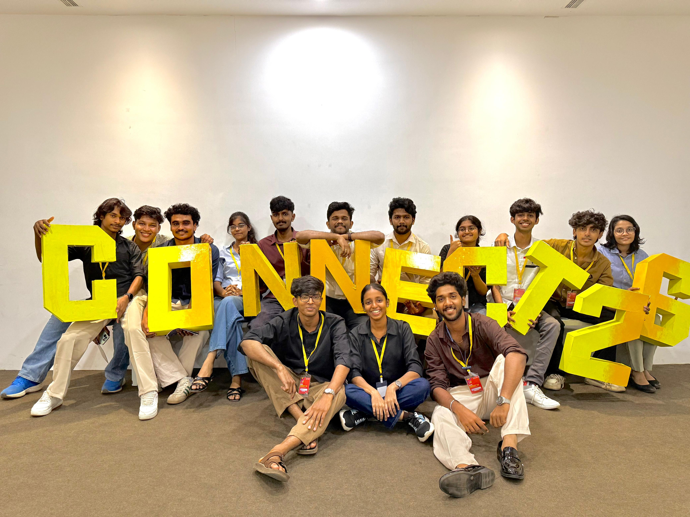
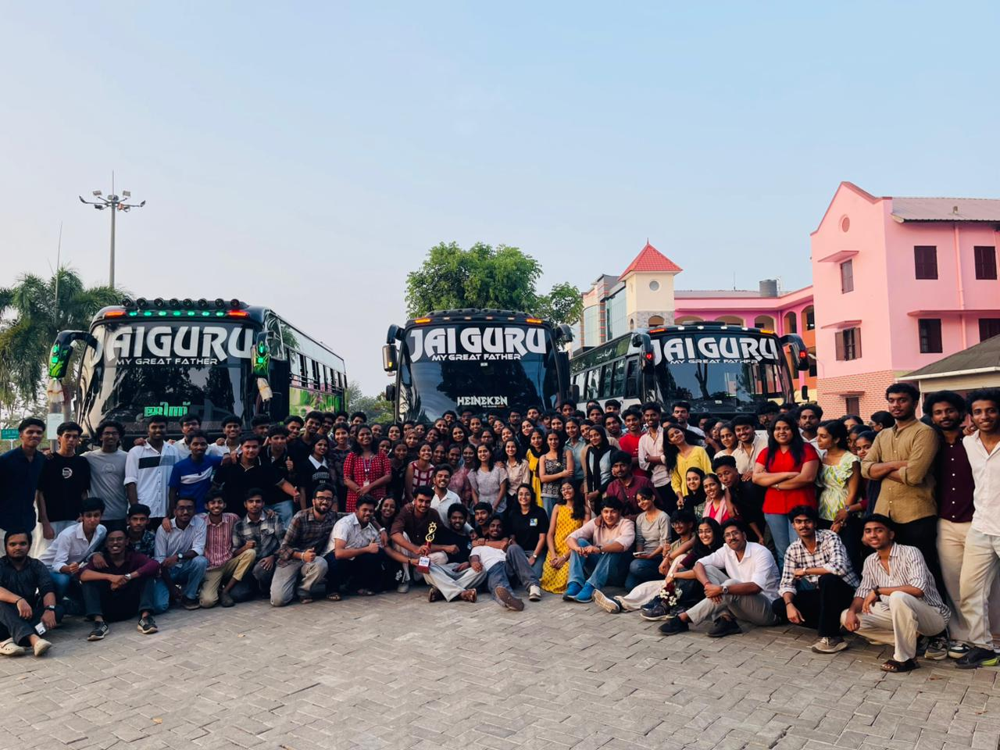
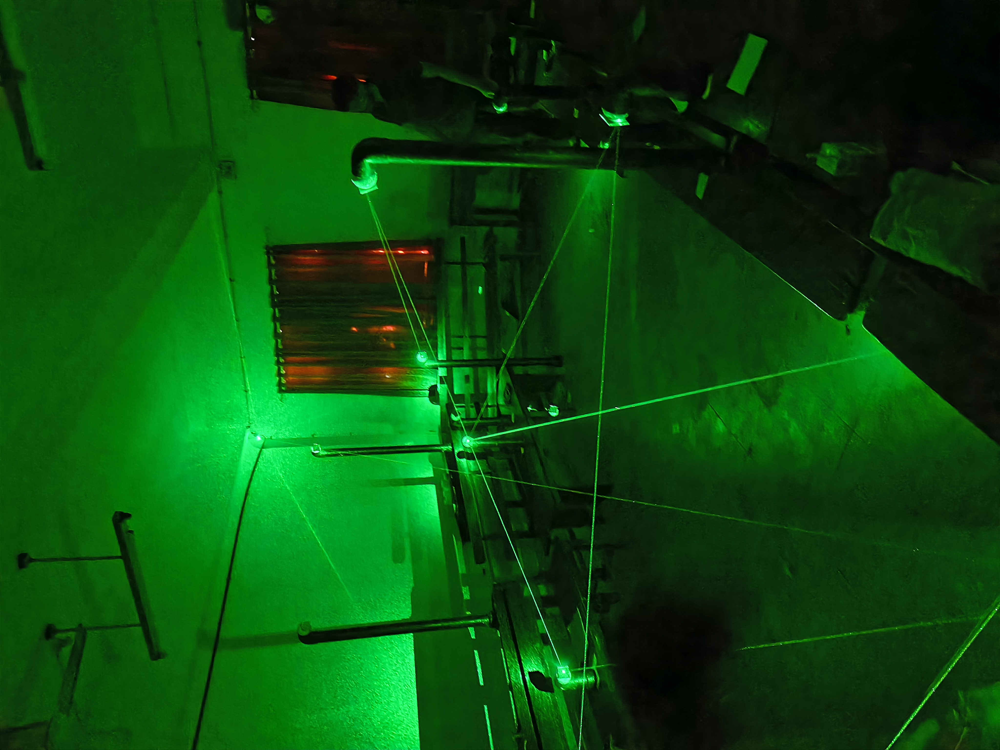
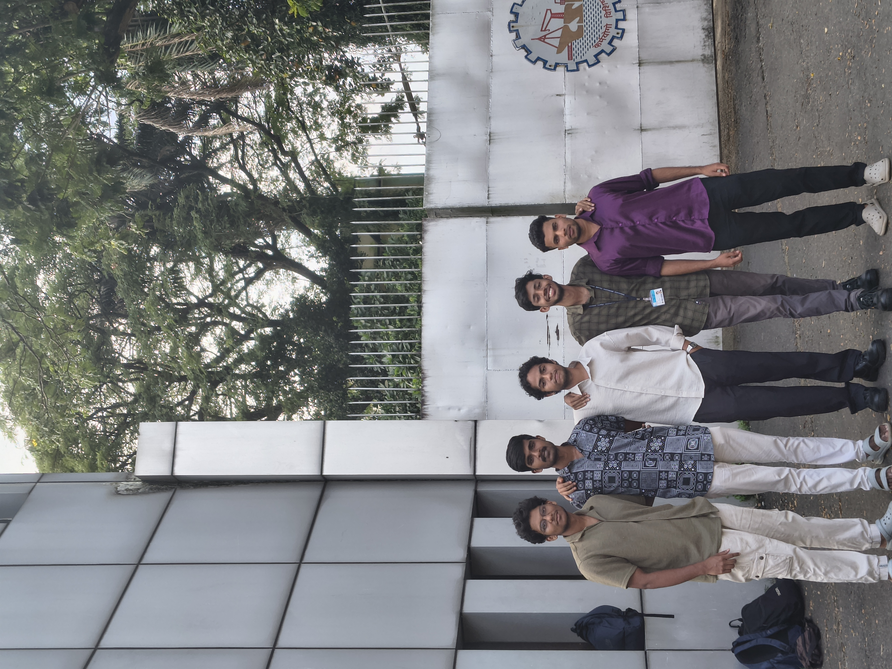
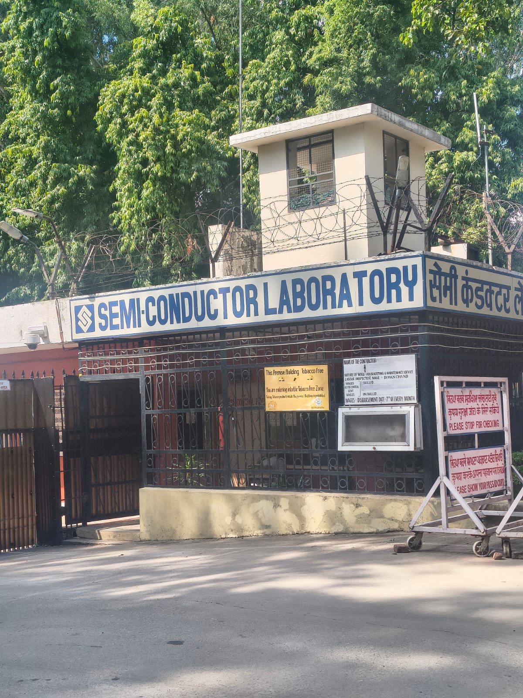
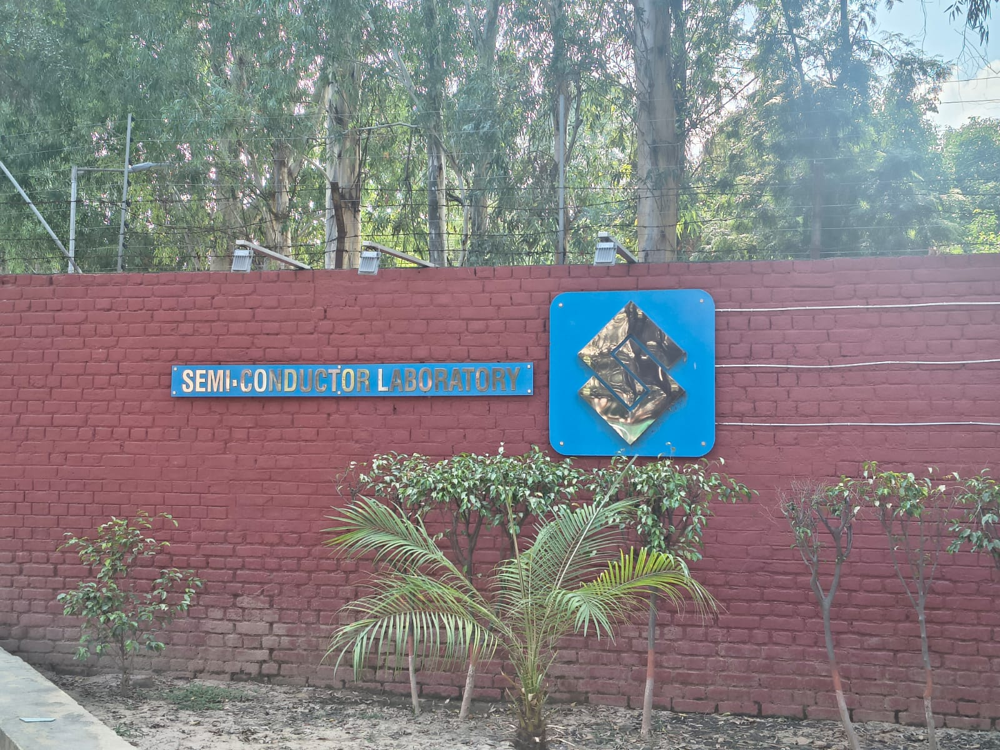

About me
Education
B.Tech, Electronics and Communication Engineering
Pre-final year, with a focus on VLSI, RTL and FPGA design.
Class 12
Class 10
B.Tech, Electronics and Communication
Studying at Government Engineering College Thrissur. Certified in CMOS Digital VLSI Design by NPTEL, IIT Roorkee (Jan to Mar 2025).
Languages
English, Malayalam and Hindi, with experience in public speaking and event hosting.
Internships
Analog Design Intern, Semi-Conductor Laboratory, Mohali
I spent four weeks in SCL's VLSI Design Group going from measuring single transistors to designing a complete two-stage op-amp in the 180 nm CMOS PDK. I did this with my teammate Faju Swalih P C, under the guidance of Mr. Manoj Kumar (Scientist/Engineer "SE").
- Device characterization: simulated NMOS and PMOS transistors in Cadence Virtuoso and extracted ID–VGS, gm, gm/ID, fT, threshold voltage and intrinsic gain across channel lengths.
- Design method: used the gm/ID approach to choose operating points and size transistors from data rather than guesswork.
- Building blocks: designed and verified a current mirror and a differential amplifier before combining them into the op-amp.
Industrial Intern, Cochin Shipyard Limited, Kochi
My first look at engineering at the scale of a ship. I moved between the repair and construction sides of a working shipyard and learned how many disciplines have to line up before a vessel can go to sea. What stood out most was how much of modern marine engineering depends on electronics.
- Ship repair: saw how the machinery, engine, electrical, instrumentation, electronics, pipe and hull shops each handle their part of one vessel.
- Electronics in heavy machinery: studied the control and electronics behind cranes and industrial equipment in the Utilities and Maintenance division.
- Ship systems: covered telecommunication, integrated systems and electrical outfitting.
- Safety first: learned the protocols that keep a large, high-risk industrial site running.
- On board: went aboard a ship under construction for a German client and visited the Kerala Water Metro boat project while it was being built.
Projects
Adaptive Multi-Protocol Communication Hub
A Verilog multi-protocol conversion unit on FPGA that receives a byte over one protocol (SPI, I2C or UART) and sends it out over another. A shared 8-bit register and a 2-bit select input route each byte to the chosen transmitter, and only that transmitter is enabled. Built on the Nexys 4 DDR (Artix-7) with Vivado, and checked with testbenches and the Vivado ILA.
Four conversion paths work on hardware: I2C to SPI, I2C to UART, UART to SPI with a Python host, and SPI to UART from the on-board ADXL362 accelerometer. Automatic protocol detection and FIFO buffering are planned next.
Image Encryption and Decryption using FPGA and Cadence
A hardware image encryption system on FPGA. A chaotic logistic-map generator produces a keystream in fixed-point arithmetic, and each pixel of a 50 × 50 grayscale image is XORed with it. Decryption regenerates the same keystream to recover the image. Dual-port RAM, a FIFO, a control FSM and a UART link to a Python script complete the design.
I managed the RTL design, synthesis, physical implementation and timing analysis, using Cadence Genus, Innovus and Xilinx Vivado. Image entropy rose from about 2.83 to 7.93 after encryption.
Gas leakage detection
Arduino system that detects gas and sets off a safety alarm automatically.
Super Talker
Communication-assistive device with pre-programmed audio outputs, built with NIPMER.
Smart Water Flow
Automated water-flow system on Arduino, with a Flutter and Firebase app for real-time monitoring.
To-Do app
Flutter task manager with full create, read, update and delete.
Skills
- Technical
- Programming
- Software and tools
- Planning and people
- Office
Leadership
Chairperson, IEEE RAS SBC GECT
I coordinated PRIM.E and PRIM.E Chapter 2. PRIM.E was the chapter's first All-Kerala event and has since become its flagship. My team and I secured funding from IEEE headquarters for both editions: $500 for the 2025 edition and $1,800 for 2026. I handled program planning, management and finance, and both editions ran successfully.
Convener, ISTE GECT
My team launched the college's first internship cell under ISTE GECT, which has grown past 1k followers, and ran its first internship program. We also formed the first alumni cell, connecting ISTE GECT alumni to strengthen ties and support future placements. In my term the chapter won the Best Chapter award after a long gap, for hosting the most events, adding the most new members and raising the quality of the college.
As Joint Convener, I was part of the team that won the overall championship at the ISTE Annual Convention held at MBCET.
Vice Chairman, ISTE Kerala Section
My team drafted new rules and regulations for the ISTE annual state conventions, and I held meetings on collaborations with other organizations.
MD team member, IEEE RAS Kerala
Coordinated with student chapters and supported section-wide initiatives.
Program coordinator, Hult Prize
Student chapter program coordination.
Fest teams
Student coordinator for Quintessence (ECE fest) and publicity team member for Dyuthi (cultural fest).
Awards
Best Student Award, ISTE Kerala Section
Best Delegate of the Year, ISTE Annual State Convention 2025
1st in English Debate, 3rd in English Extempore, Urakke Arts Fest
Certificates


Into my life






